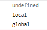
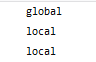

在 JavaScript 中创建变量通常称为"声明"变量。
一、我们使用 var 关键词来声明变量：
变量声明之后，该变量是空的，其值实际上是 undefined。
如需向变量赋值，请使用等号：
不过，您也可以在声明变量时对其赋值：
function varTest() {
var x = 1;
if (true) {
var x = 2; // 同样的变量!
console.log(x); // 2
}
console.log(x); // 2
}
function letTest() {
let x = 1;
if (true) {
let x = 2; // 不同的变量
console.log(x); // 2
}
console.log(x); // 1
}如果重新声明 JavaScript 变量，该变量的值不会丢失：
在以下两条语句执行后，变量 carname 的值依然是 "Volvo"：
名字解析顺序
javascript中一个名字(name)以四种方式进入作用域(scope)，其优先级顺序如下：
1、语言内置：所有的作用域中都有 this 和 arguments 关键字
2、形式参数：函数的参数在函数作用域中都是有效的
3、函数声明：形如function foo() {}
4、变量声明：形如var bar;
名字声明的优先级如上所示，也就是说如果一个变量的名字与函数的名字相同，那么函数的名字会覆盖变量的名字，无论其在代码中的顺序如何。但名字的初始化却是按其在代码中书写的顺序进行的，不受以上优先级的影响
javascript是没有块级作用域的。函数是JavaScript中唯一拥有自身作用域的结构。
var v = "hello";if(true){ console.log(v); var v = "world";}var v = "hello";(function(){ console.log(v); var v = "world";})();Javascript声明变量的时候，虽然用var关键字声明和不用关键字声明，很多时候运行并没有问题，但是这两种方式还是有区别的。
例一：
<script type="text/javascript">
var scope="global";
function t(){
var scope;
console.log(scope);
scope="local";
console.log(scope);
}
t();
console.log(scope);
</script>
输出结果为：

总结：var声明的变量在函数内部属于局部变量，不会改变全局变量的值。
如果改为：
<script type="text/javascript">
var scope="global";
function t(){
console.log(scope);
scope="local";
console.log(scope);
}
t();
console.log(scope);
</script>
那么输出结果变为：

总结：没有用var声明的变量都是全局变量，而且是顶层对象的属性。（变量提升只是声明提升，赋值不会提升）